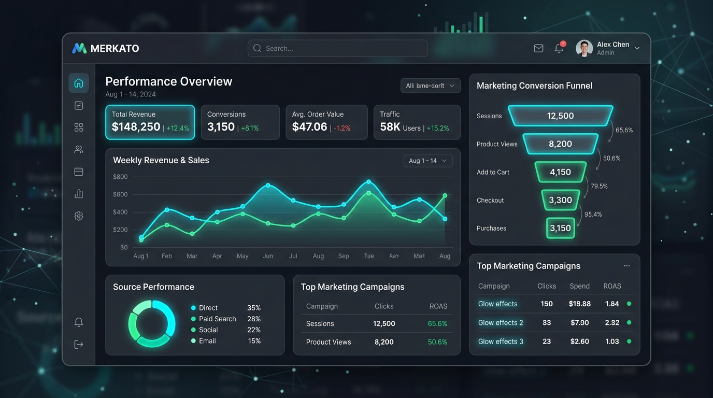

A multidisciplinary Data Analyst & Business Systems Developer
who links commercial business strategies with actual hands-on data analytics, exploratory modeling, and practical systems delivery across all operational levels.


Hello, I am Atef Elasklany a data analyst & business systems developer with specific ability to diagnose complex business challenges, orchestrate statistical data models, and deliver practical system solutions that drive measurable growth.
Graduated from Egyptian Russian University in Business Information Systems (BIS) — trained to connect strategic business analysis with database schemas and software systems.
Specializing in Exploratory Data Analysis, SQL query optimization, Python data pipelines, multi-tier Power BI dashboarding, and relational database engineering.
Featured Projects & Systems
"Data without business context produces vanity charts. Systems engineered without analytical metrics create operational blindspots. The real impact is delivered by mastering both."
Professional Journey
Egyptian Russian University (ERU)
B.Sc. in Business Information Systems (BIS) — Trained across organizational workflow modeling, database architecture, statistical data analysis, and software development.
ShopEasy E-Commerce Analytics Audit
Conducted comprehensive funnel analysis, customer sentiment extraction, and 4-tier interactive Power BI dashboard implementation to diagnose revenue leaks.
FOUSH Restaurant Management & POS Ecosystem
Architected and developed a full offline-first POS platform featuring real-time kitchen displays, receipt printing protocols, and cloud sync for multi-station operations.
Triple Seven Strategic Management System
Deployed central multi-branch lounge operational software with shift financial audits, real-time P&L sync, and zero-trust Tailscale network security.
Customer Shopping Behavior Case Study
Audited 3,900+ retail consumer transactions with PostgreSQL and Python to uncover repeat-buyer trends and formulate 5 actionable growth strategies.
Core Capabilities & Deliverables
End-to-end services designed to turn operational ambiguity into data-backed results.
Data Analytics & Business Insights
Transforming messy, disparate transactional, marketing, and operational data into clear analytical findings using SQL and Python.
- Exploratory Data Analysis (EDA)
- Customer Segmentation & Behavioral Analysis
- Sales Funnel & Conversion Diagnostics
Business Intelligence & Dashboards
Designing tailored, interactive Power BI and Excel dashboards with automated metrics, dynamic slicers, and executive visual hierarchy.
- Executive KPI Tracking Dashboards
- DAX Modeling & Automated Calculations
- Visual Data Storytelling & Reporting
Business & Systems Analysis
Mapping organizational workflows, capturing functional specifications, building Data Flow Diagrams (DFD), and designing clean schemas (ERD).
- Data Flow Diagrams (DFD) & UML Modeling
- Entity Relationship Diagrams (ERD)
- Process Optimization & Functional Specs
Data-Driven Solution Development
Building custom web applications, operational Point of Sale (POS) interfaces, and backend database integrations that streamline workflows.
- Full-Stack Web & Internal Tools
- Relational Database Implementations
- Offline-First & Cloud Synchronization
Structured Competencies Matrix
Proven technical proficiencies organized across data analytics, business analysis, and solution development.
Data Analytics & Modeling
Business Intelligence & Reporting
Business & Systems Analysis
Systems & Solution Development
Have a Project or Opportunity in Mind?
Whether you are looking to audit business data, build an executive BI dashboard, or architect a practical database system, I'm ready to collaborate.